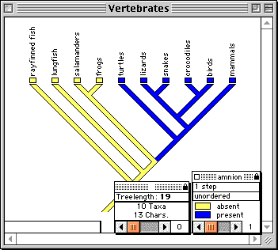
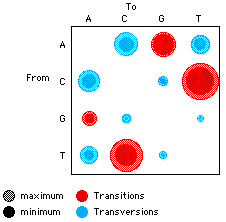
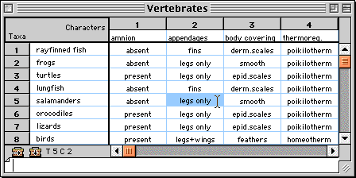
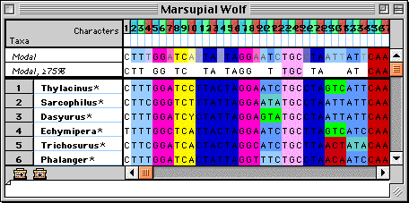
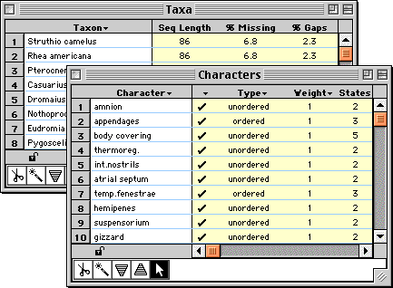

Introduction to MacClade
Portions of this page are from the manual that accompanies MacClade.
Copyright © 2002 David R. Maddison and Wayne P. Maddison
MacClade is used as a tool for phylogenetic analysis. But by
its nature it also embodies a world view, a portrayal of a phylogenetic
approach to studying diversity and evolution. It is relatively
easy to see the diversity of living organisms, but it has proved
more difficult to see that diversity in terms of its history;
the slow development of a thoroughly phylogenetic perspective
in biology attests to this challenge. Together the MacClade manual
and program present methods for analyzing and exploring phylogenetic
hypotheses, including hypotheses about character evolution. MacClade
is one attempt to give our mind's eye phylogenetic lenses, to
help us think about and see lineages and evolution.
The MacClade CD comes with versions of the program MacClade for
both MacOS X and earlier versions of the MacOS (7.5 through 9.2.2).
The CD also contains a complete, 502-page manual in PDF format
(with linked movies and examples).
MacClade provides an interactive environment for exploring phylogeny.
In MacClade's tree window, hypothesized phylogenetic trees or
cladograms can be manipulated and character evolution visualized
upon them. To manipulate the tree, tools are provided to move
branches, reroot clades, create polytomies, and search automatically
for more parsimonious trees. Character evolution is reconstructed
on the tree and indicated by "painting" the branches. Alternative
reconstructions of character evolution can be explored. Summaries
of changes in all characters can be depicted on the tree. As trees
are manipulated, MacClade updates statistics such as treelength
and the results are depicted in graphics and charts.

Examining character evolution on a tree in MacClade's tree window
MacClade provides charts summarizing various aspects of character
evolution on one or more trees, as well as charts comparing two
or more trees. For example, the charts can show the number of
trees of each length, the number of characters on the tree with
different consistency indices, and so on. There are charts specifically
designed for DNA/RNA sequence data, including one showing the
number of changes on the tree at first, second, and third codon
positions, and a chart of the relative frequencies of various
transitions and transversions.

A chart showing the relative frequencies of reconstructed changes
between bases on a tree,
with area of circle proportional to frequency of change
In MacClade's data editor, systematic and comparative data are
entered and edited. The editor has numerous features for manipulating
rows, columns, and blocks of data, and for recoding data.

Morphological data in MacClade's editor.
Many display features and tools in the editor were designed specifically
for graphical manipulation and alignment of molecular sequences.

DNA sequence data in MacClade's editor.
Windows listing characters, taxa, trees, taxon sets, character
sets, and so on provide a uniform interface for editing their
properties, sorting, and selecting them.

If we had to admit a grand purpose to the features of MacClade,
it might be "to help biologists explore the relationships between
data and hypotheses in phylogenetic biology". We envisage MacClade's
use by biologists of many backgrounds. For example, suppose:
- A systematist is working on the phylogenetic relationships
of snail species. She enters data for 100 morphological characters
and 20 taxa in MacClade's data editor, saves the file, and reads
it into Swofford's (2000) PAUP*. PAUP* is used to find parsimonious
trees, but to her surprise, the resulting trees separate two
species she had thought closely related. By moving back to MacClade,
examining alternative trees by hand, and using the charting
functions, she discovers that the unexpected result is due to
the influence of two characters of the nervous system. This
not only provokes her to examine those characters in more detail,
but also to gather molecular data. The molecular data set, on
60 taxa and 1500 nucleotides, is too large to get exact solutions
from PAUP*. PAUP*'s heuristic algorithms, combined with her
ability to suggest and examine alternative trees in MacClade,
convince her that the optimal trees for both data sets agree
that the two species are not sister species. Although she had
no intention of looking at fossil species, she realizes that
this result suggests that their peculiar shared morphology might
be primitive and old. By using the stratigraphic character type
in MacClade, she discovers the minimum age of the ancestor in
which the morphology was apparently derived was Paleocene, much
older than the group of predators against which the morphology
was thought to be a defense.
- A population biologist has been studying the adaptive advantages
of larval dispersal strategies. Although his past studies have
focused on measuring risks and fecundities at two study sites
in the Gulf of California, he realizes that his hypotheses could
be tested by seeing if it accurately predicts a species' strategy
according to its ecological position. After talking to a phylogenetic
biologist, he reluctantly admits that his question is actually
one of phylogenetic correlation between ecology and strategy.
He finds a collaborator working on the phylogeny of the group,
and together they use MacClade to map the evolution of larval
dispersal strategies on the phylogenetic tree. He discovers
that the correlation between strategy and ecology is not nearly
as strong as he would have hoped, but he notices on MacClade's
character tracing that the two groups on the phylogenetic tree
with a special dispersal strategy also have the most species.
His study shifts to an examination of the influence of dispersal
strategy on speciation and extinction. After accumulating known
phylogenies from numerous groups and exploring them with MacClade,
a clear correlation emerges between speciation success and the
special dispersal strategy. Itching to get back to his study
sites, he discovers that his newly acquired familiarity with
trees can be applied to his populations to examine patterns
of dispersal and gene flow using reconstructed gene trees. He
uses MacClade's random tree and random character generation
to formulate null models to test his population hypotheses.
- A molecular biologist studying cell surface proteins in a
herbivorous insect suspects that a particular domain might be
involved in binding secondary compounds made by the host plants.
A direct chemical approach to demonstrate binding proves difficult,
but the genes coding for this protein have been sequenced in
several dozen related species. Using MacClade to help reconstruct
the phylogeny of the species and to chart how evolutionary changes
of amino acids are distributed along the length of the protein,
she finds that this domain is indeed the most rapidly evolving.
Furthermore, by comparing the phylogenies of the insect and
the plant host using Page's COMPONENT (1993), she makes a convincing
case that one of the insect groups arose with a shift to a new
plant host that had powerful and diverse secondary compounds.
Not only did MacClade reconstruct many amino acid changes along
that branch of the insect phylogenetic tree, but it also showed
that changes in other amino acids were concentrated in the clade
of insects living on noxious hosts. With such evidence that
the domain was evolving in response to host secondary compounds,
the molecular biologist faced with renewed vigor the direct
chemical approach to examining the binding.
- An evolutionary biologist teaching a basic evolution course
wants to introduce students to phylogenetic reconstruction.
In a live demonstration MacClade is used first to help students
picture phylogenetic trees in their minds' eyes. Then, the concept
of fit between a tree and a character is shown via MacClade's
character tracing. Students are given an example data set and
let loose. Soon they are moving branches around with increasing
rapidity, treating the search for parsimonious trees like a
video game, competing against one another for shorter trees.
In the process they discover that grouping by derived similarity
will gain them shorter trees. One of them notices that one character
disagrees with most of the remaining characters on whatever
tree they can find. Indeed, on the parsimonious trees this character
shows many cases of convergence. Another character is found
that is similarly convergent, and students discuss what evolutionary
processes might lead to the two characters having correlated
evolutionary changes.
These scenarios illustrate the varied uses of a phylogenetic
perspective, and of MacClade in making it accessible.
|